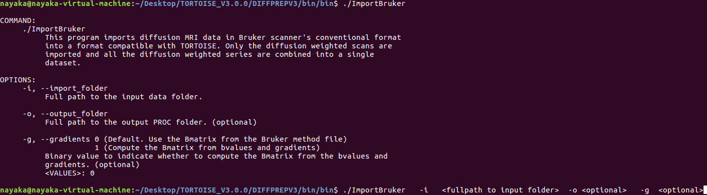
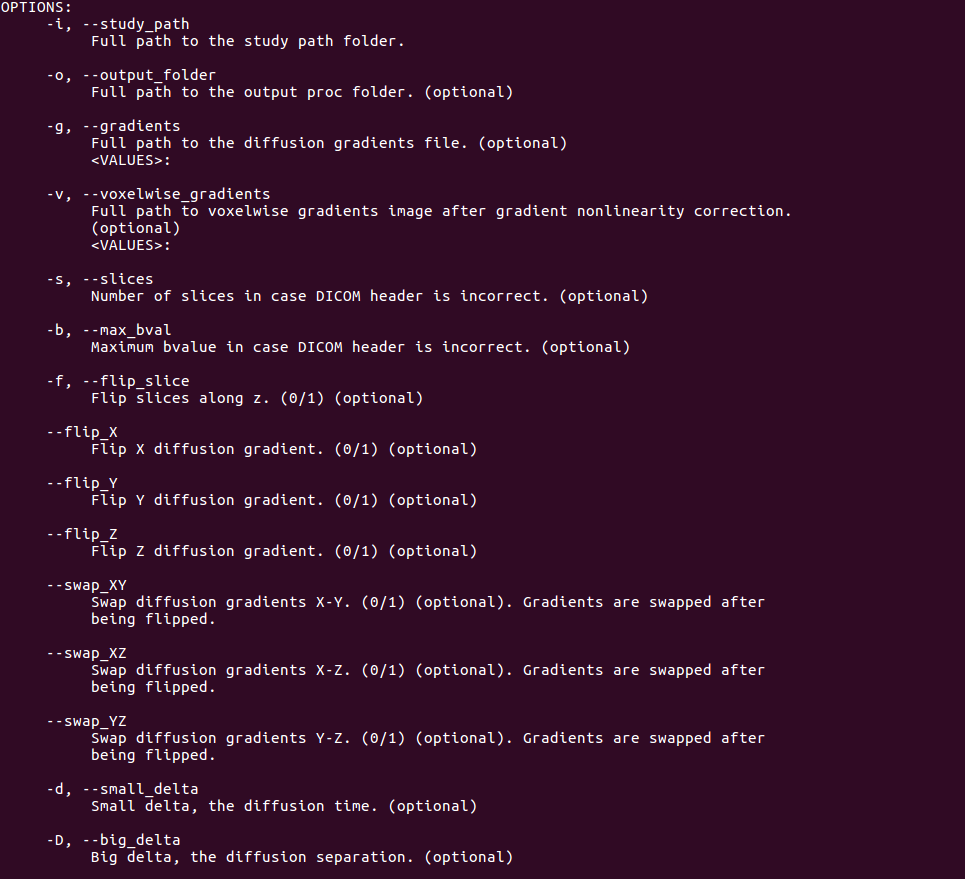
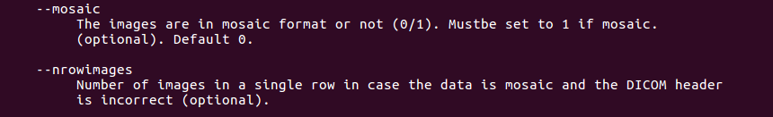
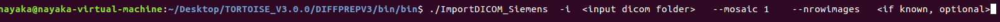
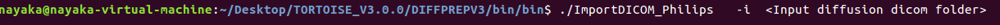
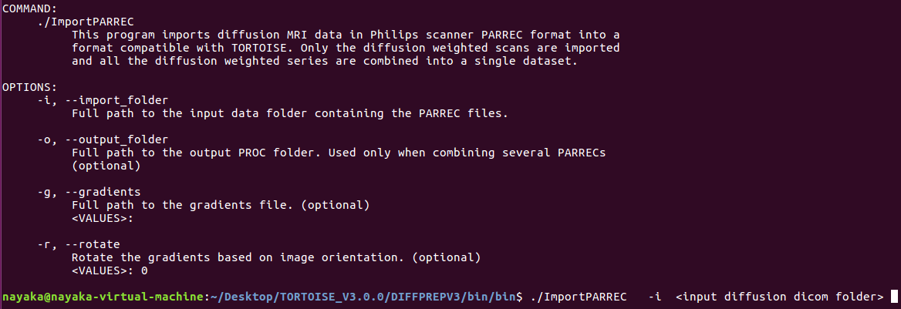
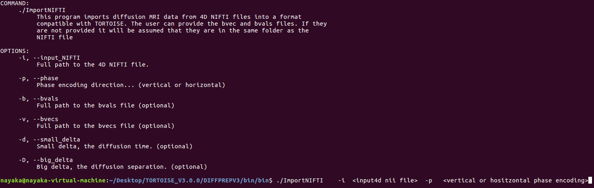

3. STEP1:IMPORT DATA¶

Some helpful tips before importing data:
- Please make sure that the folder to be imported contains only diffusion data. If you are not sure, please convert the dicoms to nifti using the mricron dcm2nii tool. This should convert diffusion files into nii with associated bvals and bvecs. If structural was present in the same folder, it would not have an associated bvals and bvecs file.
- It is advisable to open your nii file and look at the data in any visualization software to make sure the data has the expected number of volumes.
- Once you import the data, please make sure you check your data before processing to make sure the gradient information has been correctly recorded. The reliable way to check the gradient information is to check the line fields or the non symmetric heures color map (tool included). The import tool relies on information present in the header file and if it is incorrect it will be translated into your data and processing. So this checking, especially for new studies, is highly recommended.
- The new import tools is capable of reading direction information from the header. Although, if your data contains intermediate b values (for ex: 200, 500, 1000) then please provide a gradient text file that is scaled to the maximum bvalue.The gradient text file will have tab separated three columns, with the same number of rows as the total volumes in the data to be imported. The top row will have the number of rows in the text file listed.
Please remember, if you use this version, all the following steps in DIFFPREP and DRBUDDI should be
performed with the executables from this version.
Please click on the following import options to go directly to the associated section:
- IMPORT GE DICOM, PHILIPS DICOM, SIEMENS DICOM
- IMPORT GE DICOM
- IMPORT SIEMENS DICOM
- IMPORT PHILIPS DICOM
- IMPORT NIFTI
3.1. IMPORT BRUKER¶
The syntax is as shown in the last line of the screenshot. If you would like to rename the output folder, please give it a full path to output folder and a _proc will be added to this new name. If not provided, _proc will be added to the original input folder.
3.2. IMPORT GE DICOM, PHILIPS DICOM, SIEMENS DICOM¶
The dicom import for all three scanners (GE, Seiemens and Philips) are similar with the exact same option. Please note: The big delta and small delta information is measured at the scanner using an oscillopscope and needs to be provided when you have very high bvalues (>2000)
These tools can be called and used from command line using the following syntaxes:
3.3. IMPORT GE DICOM¶
Syntax: Please insert the path to your folder in the < >
3.4. IMPORT SIEMENS DICOM¶
If regular Seiemens dicom Syntax: Please insert the path to your folder in the < >
Syntax: Please insert the path to your folder in the < >
3.5. IMPORT PHILIPS DICOM¶
3.6. PHILIPS PARREC¶
Please note: the options available with other dicom formats are not available with PARREC.
3.7. IMPORT NIFTI¶
Please note: when importing 4dnii file, in addition to input file, it is mandatory to provide the phase encoding direction.
Your images are now imported into TORTOISE format and a _proc folder will be created in the same directory (or specified path when running the import command) outside of the dicom folder. This _proc folder contains the following files: .list, .nii, .bmtxt. The list file contains link to the bmtxt and nii file that is in the proc folder. Dicom images are now converted to NIFTI nii file. Please note: This nii file does not have an associated bvals and bvecs file. Bmtxt file is the file generated from the dot product of the gradient direction and the associated bvalues.